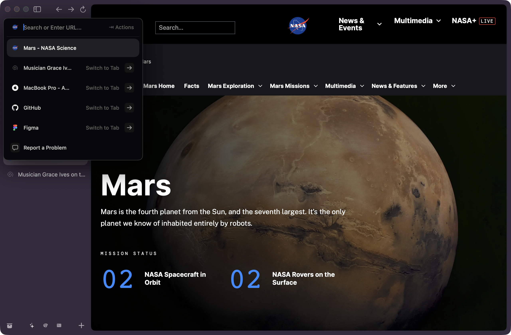
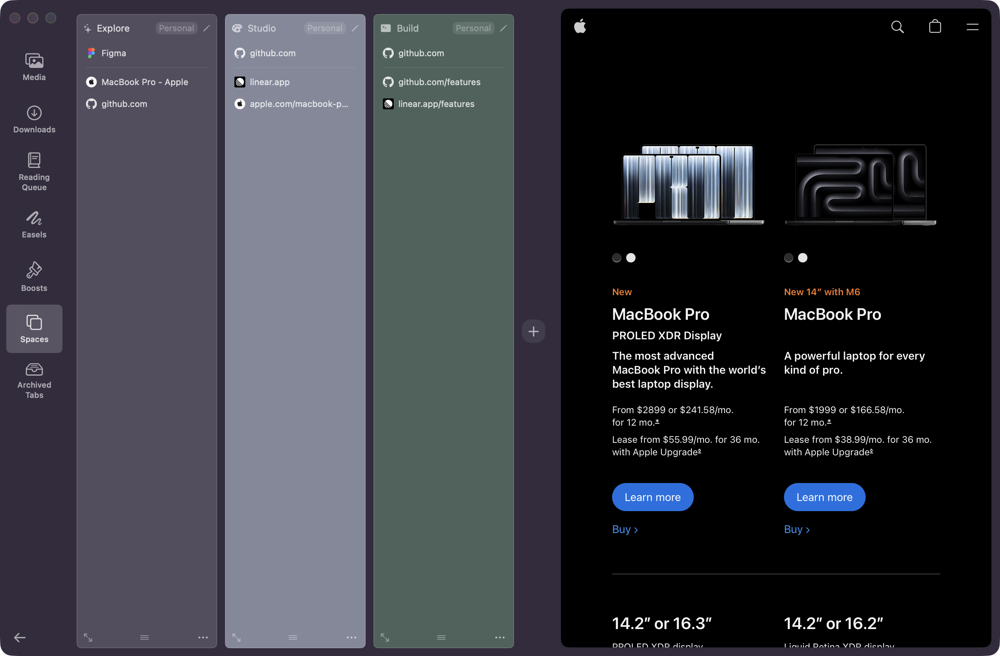

Live Folders
Your GitHub pull requests, kept together in the sidebar. They refresh as work opens, changes, and closes.
How Live Folders workSpaces, splits, and little windows. Explore what Vane can do for your everyday browsing.

Keep research, projects, and everyday pages together in a Space.
Select a window to view it full size.
Pin the keepers. Fold the folders. Let Today’s tabs be today’s tabs. Your sidebar has room for all of them.
Get to know the sidebar
Search open tabs, enter an address, or start a search from one place. Press ⌘ T or ⌘ L to get there.
Get to know the bar
Open a link in Little Vane, take a quick look, then move it to your main window when it deserves a longer stay.
Meet Little VaneKeep work, personal browsing, and research in their own Spaces. Open the Library to see them together and move between them.
Explore Spaces
11 features shown
Your GitHub pull requests, kept together in the sidebar. They refresh as work opens, changes, and closes.
How Live Folders workA command palette, a tab switcher, familiar Mac shortcuts, and rebindable controls. Go from thought to tab.
Every keyboard shortcutReader mode clears the page around the words, with text size and serif or sans-serif controls.
Reading and Picture in PictureKeep watching in Picture in Picture. A tab playing detached video stays awake.
⌥ ⌘ PSave, manage, and fill passwords through the macOS keychain. Separate profiles, separate credentials.
Password detailsBuilt-in ad and tracker blocking, private windows, and camera and microphone decisions per site.
Privacy and blockingImport history and bookmarks from Arc, Safari, Firefox, and Chromium browsers. Bring passwords from CSV exports, too.
Session restore, archived tabs, and crash recovery help you return to the pages you were using.
Tabs and the LibraryUnpacked web extensions, Web Inspector, a JavaScript console, and View Source.
For developersPause, resume, find a file in Finder, and choose where downloads land. Browse saved records in the Library.
Getting startedSwiftUI, AppKit, and system WebKit. Native settings, menus, VoiceOver labels, and reduced motion support.
Explore the sourcemacOS 26 or later · In active development